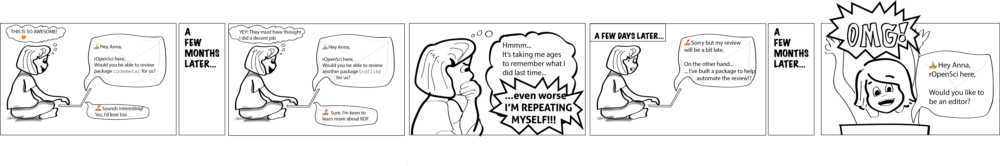

pkgreviewr
supporting rOpenSci package reviews through guidance, automation and templating

Anna Krystalli 1, 2, 
@annakrystalli
a.krystalli@sheffield.ac.uk
1 University of Sheffield RSE
2 Editor, rOpenSci
rOpenSci software review
rOpenSci curate software to help scientists access, download, manage, and archive scientific data in open, reproducible ways.
Q: How do we…
- Ensure the quality of code written by scientists without formal training in software development practices?
- Drive adoption of best practices among our contributors?
- Create a community that would support each other?
A: Through Open Peer Review!
pkgreviewr 📦
Helps guide the review process through automation and templating.
Install package
Initialise review
pkgreviewr::pkgreview_create(
pkg_repo = "AntonelliLab/outsider",
review_parent = "~/Documents/reviews/")cloning into '/var/folders/8p/87cqdx2s34vfvcgh04l6z72w0000gn/T/
RtmpFQv2Iv/pkgreviewr_prep/outsider'...
Receiving objects: 100% (2379/2379), 1493 kb, done.
✔ Package source cloned successfully
✔ pkg_dir written out successfully
✔ review project 'outsider-review' initialised successfully
✔ Initialising Git repo
✔ Adding files and committing
✔ review_dir written out successfully
pkgreview_create() actions:
- Clones 📦 source code
- Initialises Review project:
.
├── outsider [20 entries exceeds filelimit]
└── outsider-review
├── README.md
├── index.Rmd
├── outsider-review.Rproj
└── review.mdAnatomy of a review project
index.Rmd: interactive parametarised workbook prepopulated with major steps required to complete the review.pkgreview.md: up-to-date review response template to submit to the package rOpenSci software review issue.README.md: prepopulated review repo README.
index.Rmd

pkgreviewr for editors
Initialise editorial checks
Before going to review, packages need to pass initial editor’s checks. pkgreviewr can help!
pkgreviewr::pkgreview_create(
pkg_repo = "AntonelliLab/outsider",
review_parent = "~/Documents/editorials/",
template = "editor",
issue_no = 282).
├── editor.md
├── index.Rmd
├── outsider-editor.Rproj
└── request.RmdInvite reviewers
Next stage is to find reviewers. pkgreviewr provides functionality for generating prepopulated invitations to review.
Loading required package: shiny
Listening on http://127.0.0.1:3132
processing file: request.Rmd
|.....................................................| 100%
inline R code fragments
Output created: request.html